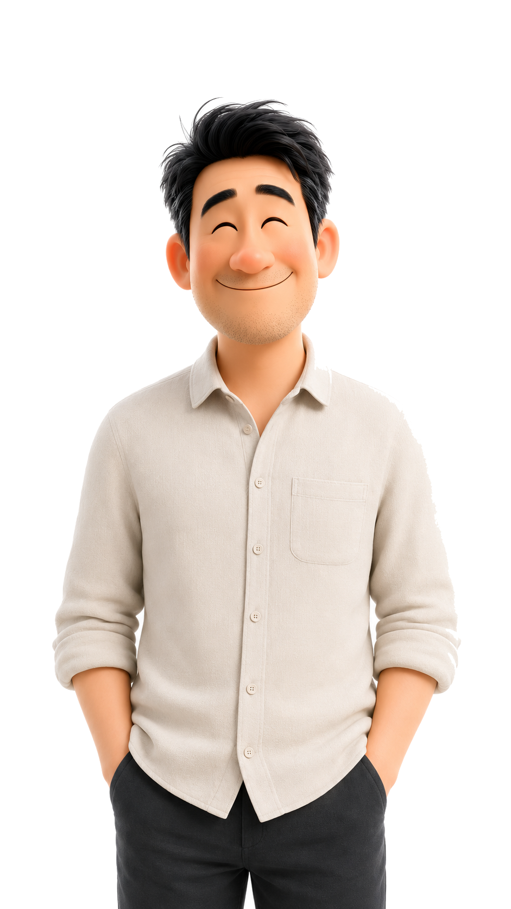

Hey, I'm 不太行的隊友,
將大膽的點子轉化為無所事事的具體實踐。擅長利用大腦離線、碳水化合物降解，來達成全天候的重力平衡與靜止。

15+
【待補充】 專業耍廢年份
280+
【待補充】 消耗碳水化合物種類
*99%
重力平衡＆睡意飽滿度
50
隨處秒睡之極端環境數
吃東西：高效能固態能量轉換系統。
喝東西：液態冷卻液引流專家。
到處睡：多地平面重力休眠測試。
等待解鎖的中年第二春技能。
【待補充】 1,000+ 個曾被我放鳥或一起擺爛的專案
Hey, I'm 不太行的隊友, 一個在高度競爭的數位時代裡，堅持把「無所事事」做到極致的中年男子。
在這個大家都在談論「賦能、協同、極速交付」的世界，我反其道而行。我深信，一個專案要走得長遠，必須要有一位隊友能夠在最關鍵的時刻保持絕對的「不活躍狀態」。這不只是擺爛，而是一門藝術：精準地虛度光陰，系統性地消耗碳水，並維持完美的心率穩定。
無論是高難度的沙發陷落測試，還是極致的拿鐵咖啡稀釋工程，我都能提供業界最穩定的物理輸出。如果您需要一個不會給您增加任何 KPI 壓力、且隨時能陪您在專案裡優雅躺平的隊友，您找對人了。
探索我最新研發的各類躺平科技與不活躍範例
深層睡意環境噪音產生器 / 2026 / Sound Tech
物理休眠深層指數模擬器 / 2026 / Hardware Mockup
軌道式碳水化合物捕獲天線 / 2026 / Concept Art
如果您也對無所事事充滿熱情，或者需要一位隨時能跟您保持同步擺擺的隊友，歡迎隨時透過下方的方式與我建立連線。
SYSTEM_NOTIFICATION
複製成功